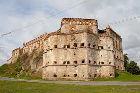
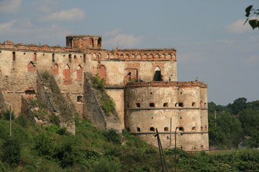

Фортечні мури, завтовшки 1,8 м, мають прямокутні стрільниці, що суттєво відрізняються від давнішних. Їх перекривають кам'яні плити. Розміром стрільниці сягають 65х77 та 50х60 см (їхні попередники були розміром 33х28 см). Із зовнішнього боку їхня підстрільнична частина скошена. Такого типу архаїчних стрільниць залишилося в Україні небагато, бо з розвитком фортифікаційного мистецтва в другій половині XV століття структура стрільниць змінюється: вони мають ззовні, а часто і зсередини аркове перекриття. Ці архаїчні стрільниці містилися на мурах, які оточували кам'яниці XV століття. Одну з кам'яниць, схожу на триповерхову вежу, прибудовано із зовнішнього боку східного прясла (частини) фортечного муру, друга, яка слугувала за житло і була так само триповерхова, врізається в південне прясло. Поверхи як першої, так і другої кам'яниць були перекриті кам'яними склепіннями та складчастим дахом. Широкі вікна, двері завершувалися лучковими кам'яними арками. В кімнатах були коминки, один з них зберіг
Пам'ятками архітектури національного значення, які входять до складу Меджибізького замку і перебувають на державному обліку: палацовий комплекс, церква святого Миколая, прясла мурів і вежі (об'єкт «Мури з баштою»).
Замкова церква розташована посеред двору. У 1586 році реконструйована й освячена як католицька каплиця. В плані — це прямокутна однонефна будова з вапняку і шатровим дахом, з круглою вежкою. Будівля перенесла ряд архітектурних змін, продиктованих як релігією, яка в ній сповідувалась, так і побажаннями власників.
У 2001 році замок отримав статус Державного історико-культурного заповідника.
Нині в пристінних корпусах замку розташовані музейні експозиції: історична, етнографічна, Музей пам'яті жертв Голодомору 1932—1933 рр. на Поділлі, а також виставкові зали.З 2004 по 2015 рр. (окрім 2014 р.) в замку проходив Всеукраїнський історичний фестиваль «Стародавній Меджибіж». У фестивальні дні замок переповнений туристами, лицарями, лучниками, принцесами та міфічними героями. Реконструктори історичних подій з усієї України приїздять сюди, щоб взяти участь у боях, стрілецьких турнірах, конкурсах костюмів та менестрелей (середньовічних співців і музикантів).
За відсутності державного фінансування реставраційних робіт 23 грудня 2014 p. стався обвал західної стіни головного корпусу палацового комплексу. Станом на 2017 рік проводяться маштабні реставраційні роботи, у зв'язку з надходженням коштів у фортецю.